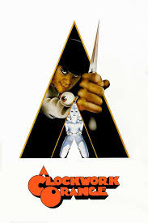
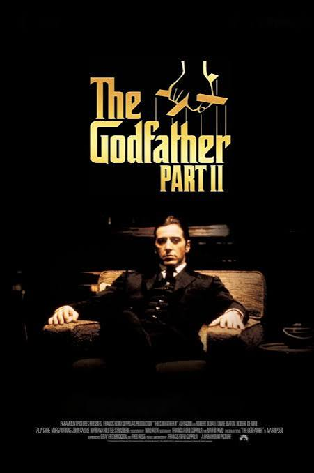
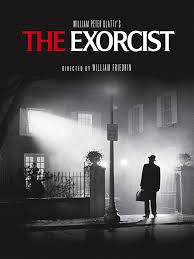
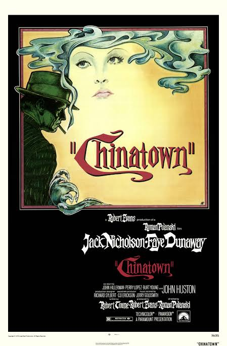
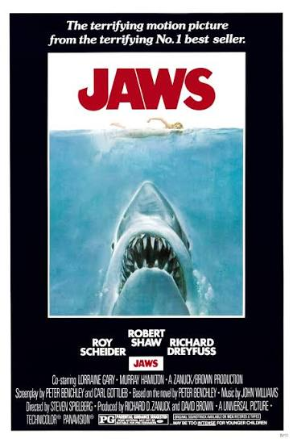
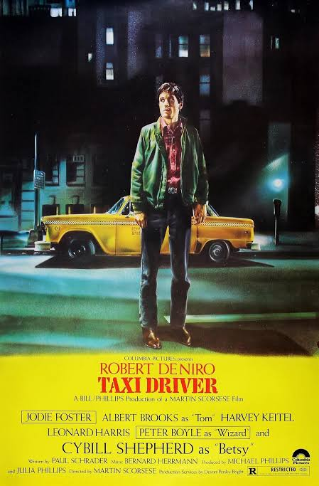
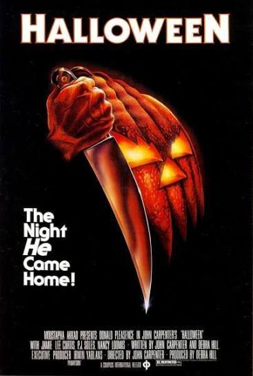
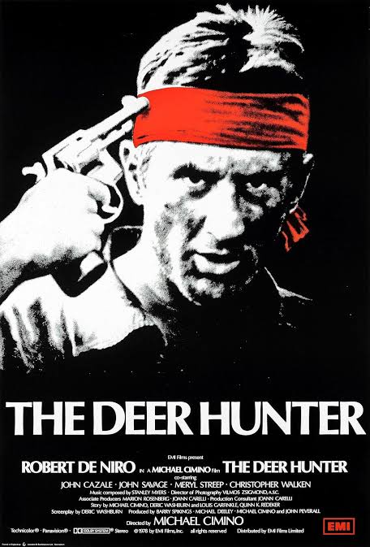
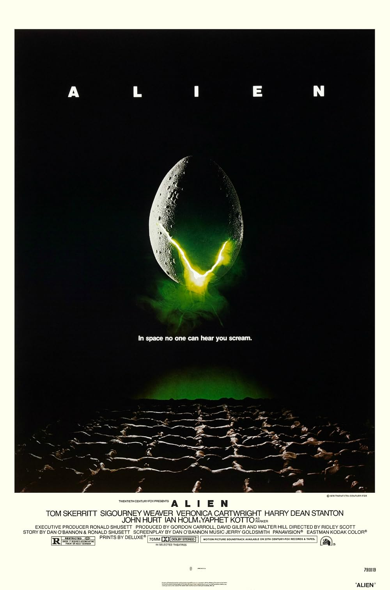
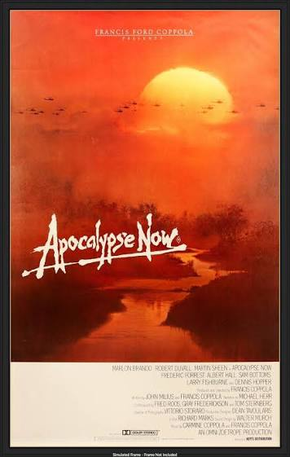

El mejor cine de los años 70
Los años 70 transformaron la historia del cine con
directores innovadores, historias memorables y nuevas
formas de contar relatos. Esta década destacó por sus
grandes dramas, películas de terror, ciencia ficción
y clásicos que siguen siendo importantes hoy.

La naranja mecánica
Año: 1971
Director: Stanley Kubrick
LOVERS OF BEETHOVEN
En una Gran Bretaña de un futuro cercano, el joven Alexander DeLarge y sus amigos se divierten golpeando y violando a quien les plazca. Cuando no está destruyendo la vida de otros, Alex se deleita con la música de Beethoven. El estado, deseoso de reprimir la delincuencia juvenil, le ofrece a Alex, que se encuentra encarcelado, la opción de someterse a un procedimiento invasivo que le arrebatará toda autonomía. En una época donde la conciencia es un bien preciado, ¿podrá Alex cambiar de opinión?

El padrino
Año: 1974
Director: Francis Ford Coppola
AN OFFER THAT YOU CANT REFUSE
El auge y la caída del imperio Corleone.
En la saga de la familia criminal Corleone, el joven Vito Corleone crece en Sicilia y en el Nueva York de la década de 1910. En la década de 1950, Michael Corleone intenta expandir el negocio familiar a Las Vegas, Hollywood y Cuba.

El exorcista
Año: 1973
Director: William Friedkin
THE POWER OF CHRIST COMPELS YOU
algo casi incomprensible le está sucediendo a una chica en esta calle, en esta casa… Y han mandado llamar a un hombre como último recurso. Este hombre es El Exorcista.
Cuando una misteriosa entidad posee a una niña, su madre busca la ayuda de dos sacerdotes católicos para salvarle la vida.

Chinatown
Año: 1974
Director: Roman Polanski
You get tough. You get tender. You get close to each other. Maybe you even get close to the truth.
El detective privado Jake Gittes vive de la turbia moralidad del sur de California, antes de la Segunda Guerra Mundial, bañado por el sol. Contratado por una bella dama de la alta sociedad para investigar la infidelidad de su marido, Gittes se ve envuelto en un torbellino de intrigas y engaños mortales, descubriendo una red de escándalos personales y políticos que se entrelazan sin cesar.

Tiburón
Año: 1975
Director: Steven Spielberg
La aterradora película basada en el aterrador libro número 1 en ventas.
Cuando la comunidad costera de Amity se ve atacada por un peligroso tiburón blanco, el jefe de policía del pueblo, una joven bióloga marina y un curtido cazador de tiburones se embarcan en una desesperada misión para matar a la bestia antes de que vuelva a atacar.

Taxi Driver
Año: 1976
Director: Martin Scorsese
ARE YOU TALKING TO ME?
En cada calle de cada ciudad de este país, hay un don nadie que sueña con ser alguien. Es un hombre solitario y olvidado, desesperado por demostrar que está vivo.
Travis Bickle, un solitario perturbado que sufre de insomnio, acepta un trabajo como taxista en la ciudad de Nueva York, recorriendo las calles cada noche y desconectándose cada vez más de la realidad mientras sueña con limpiar la sucia ciudad.

halloween
Año: 1978
Director:john carpenter
¡La noche que volvió a casa!
Quince años después de asesinar a su hermana en la noche de Halloween de 1963, Michael Myers escapa de un hospital psiquiátrico y regresa al pequeño pueblo de Haddonfield, Illinois, para matar de nuevo.

El francotirador
Año: 1978
Director: Michael Cimino
¡Una de las películas más importantes y poderosas de todos los tiempos!
Tres trabajadores siderúrgicos se alistan en el ejército y son enviados a Vietnam; uno deja atrás un matrimonio precipitado, los otros un amor compartido. Lo que viven durante la guerra cambia sus vidas para siempre.

Alien, el octavo pasajero
Año: 1979
Director: Ridley Scott
IN THE SPACE NOBODY CAN HEAR YOU SCREAM
Durante su regreso a la Tierra, la nave espacial comercial Nostromo intercepta una señal de socorro proveniente de un planeta distante. Cuando un equipo de tres tripulantes descubre una cámara con miles de huevos en dicho planeta, una criatura dentro de uno de ellos ataca a un explorador. La tripulación desconoce la inminente pesadilla que se avecina cuando el parásito alienígena implantado en su desafortunado huésped nazca.

Apocalypse Now
Año: 1979
Director: Francis Ford Coppola
THIS IS THE END
En el apogeo de la guerra de Vietnam, el capitán Benjamin Willard es enviado a una peligrosa misión que, oficialmente, "no existe ni existirá jamás". Su objetivo es localizar y eliminar a un misterioso coronel de las Fuerzas Especiales llamado Walter Kurtz, quien ha estado liderando su ejército personal en misiones guerrilleras ilegales en territorio enemigo.